Mendix 11
For Mendix 11, I led a brand evolution inspired by the intelligence of nature. Working with product marketing, we translated natural patterns into a flexible visual system for the release—from Studio Pro and the launch campaign to digital communications and events. Bold messaging, generative forms, and product-inspired details brought the work together, giving Mendix a more distinctive presence across every touchpoint.
Launch film & behind the scenes
The launch keynote opening film, alongside storyboards, location filming in Rotterdam, and studio recordings for the keynote and product demos.
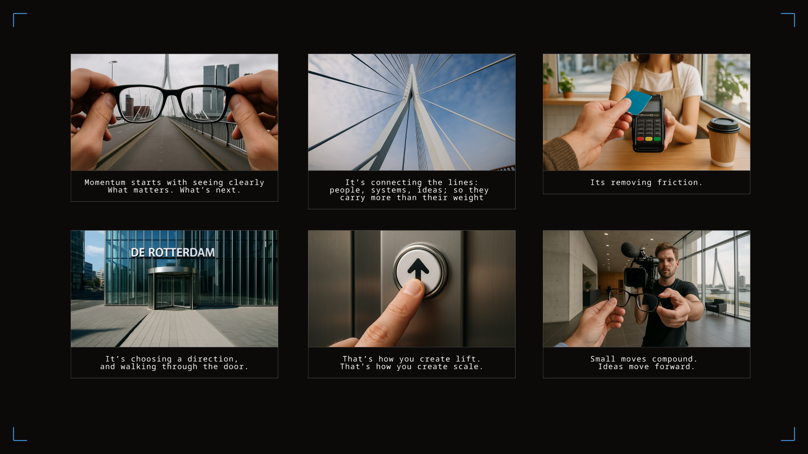
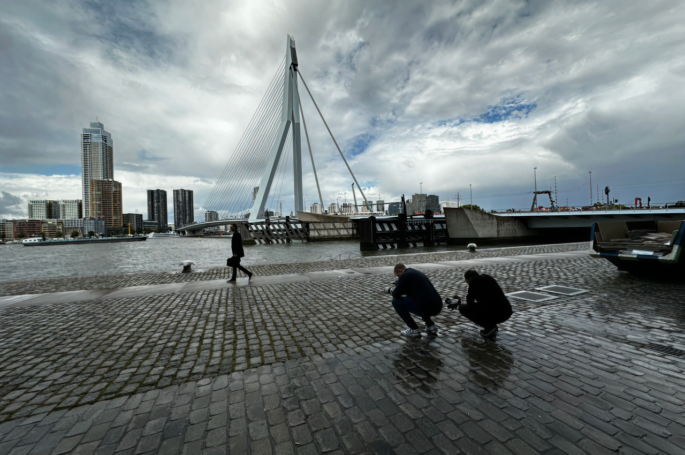
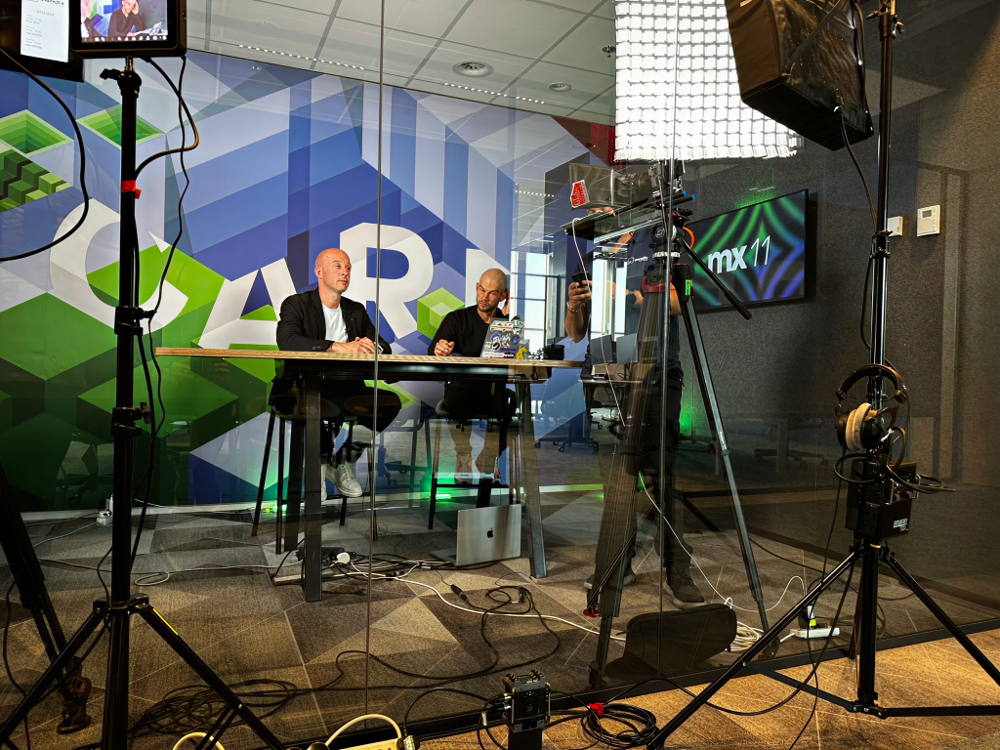
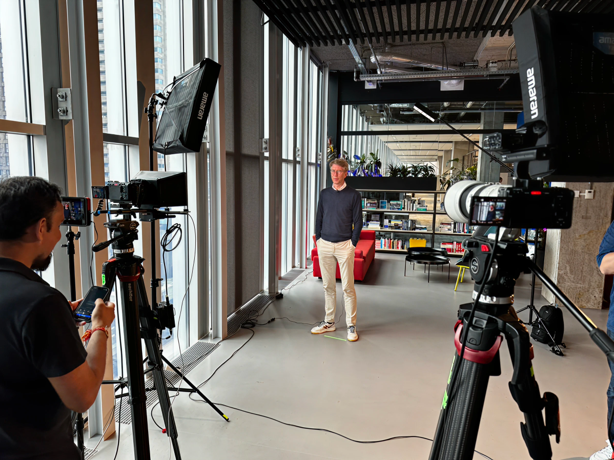
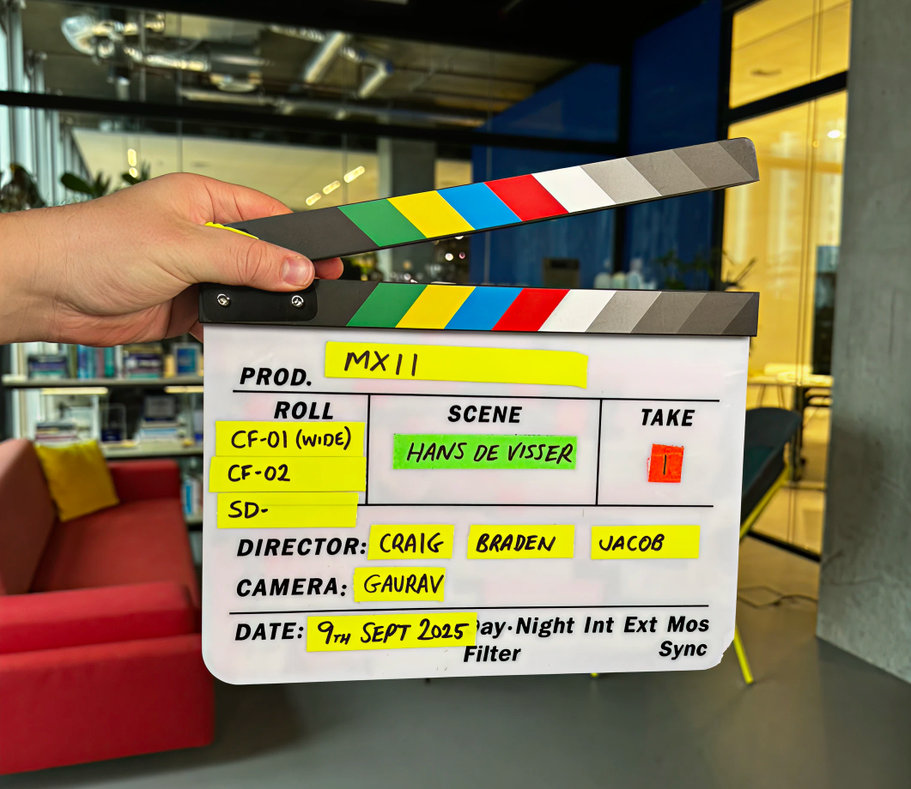
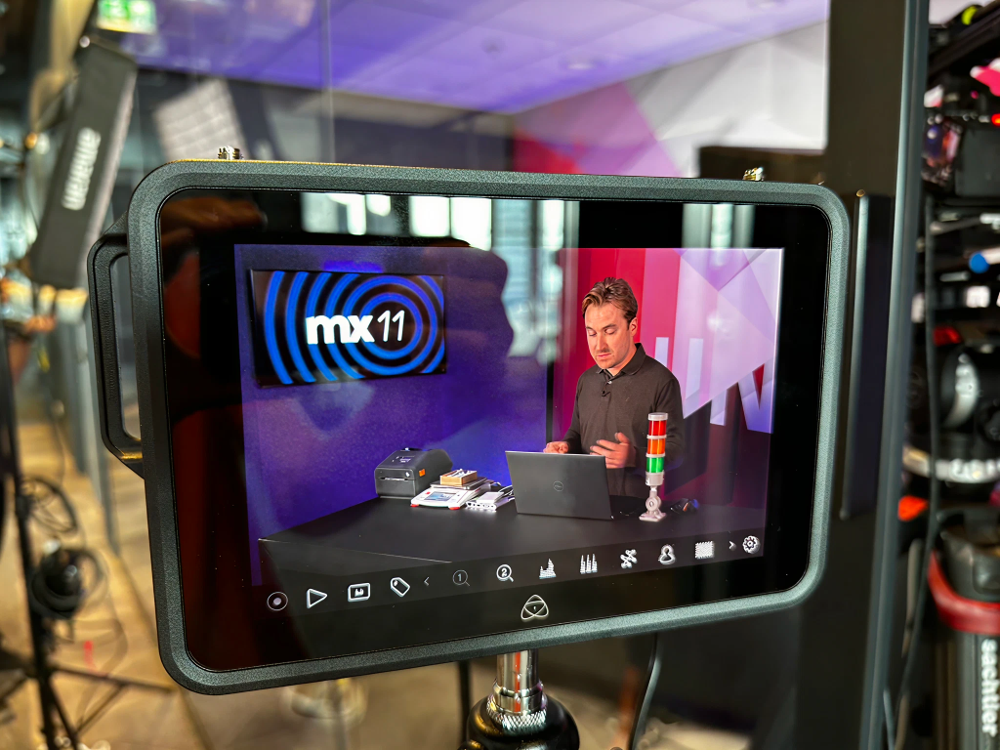
Digital launch assets
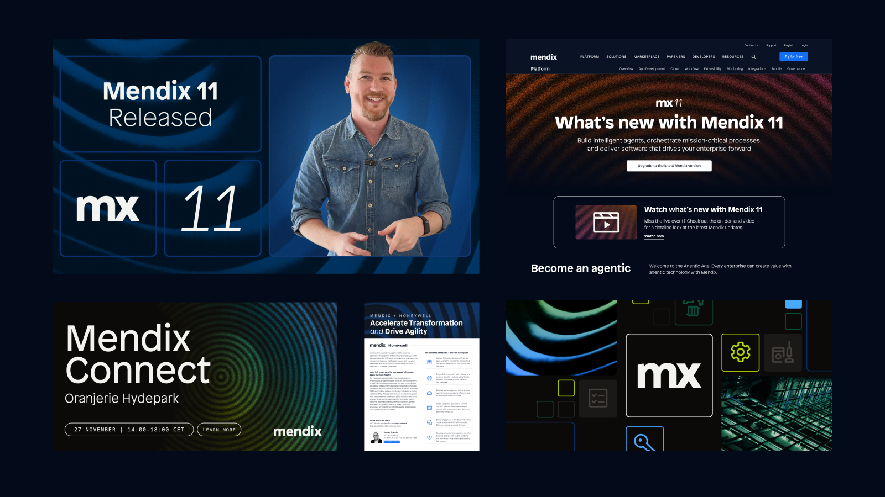
Mendix 11 product branding
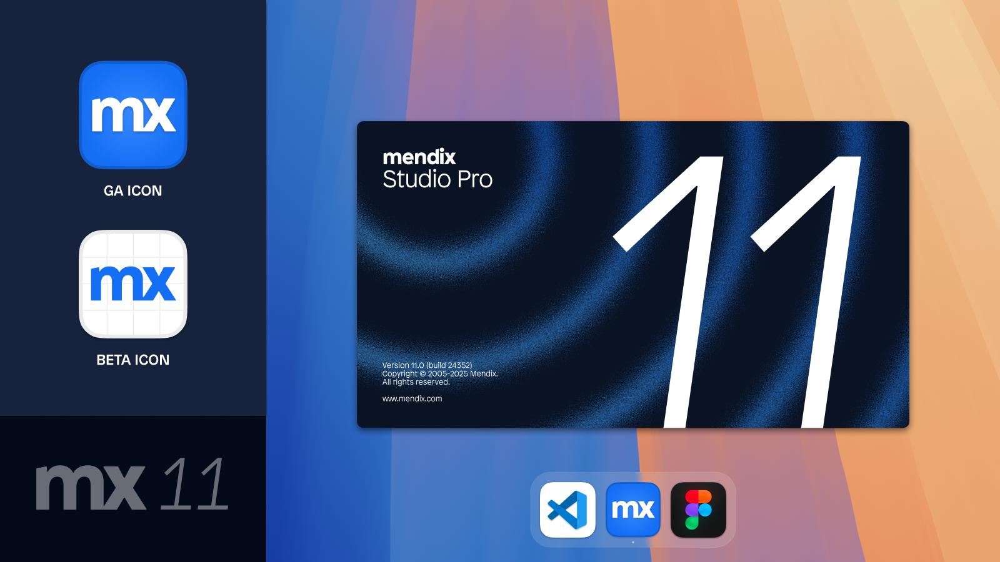
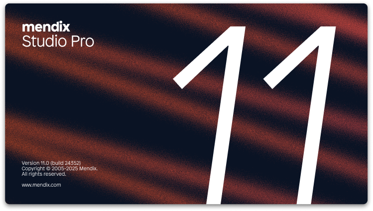
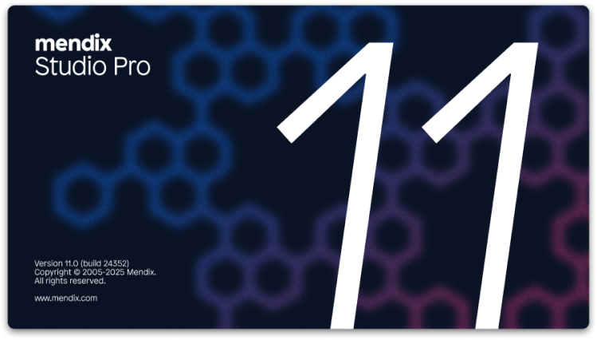
Event branding
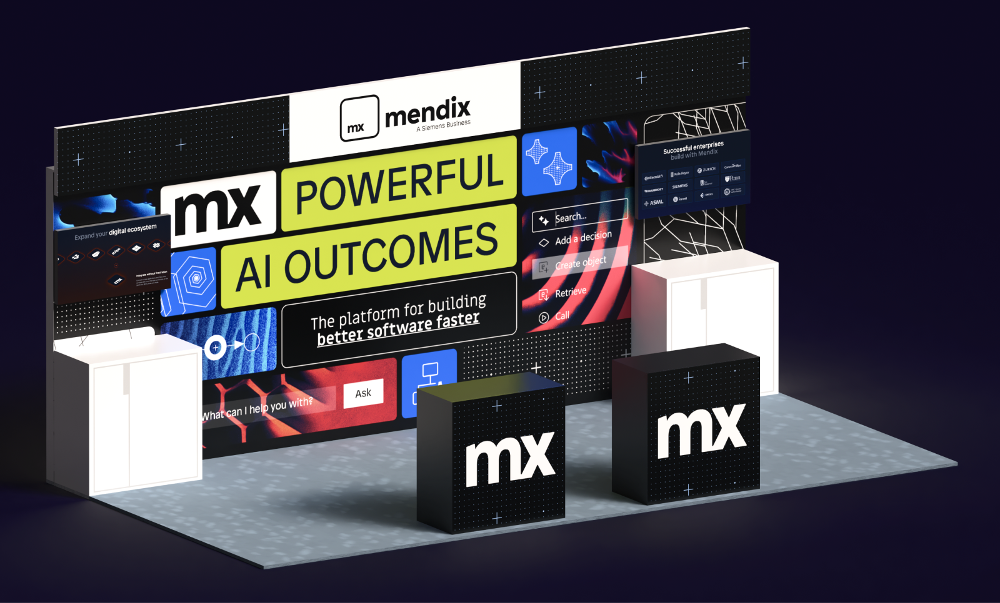
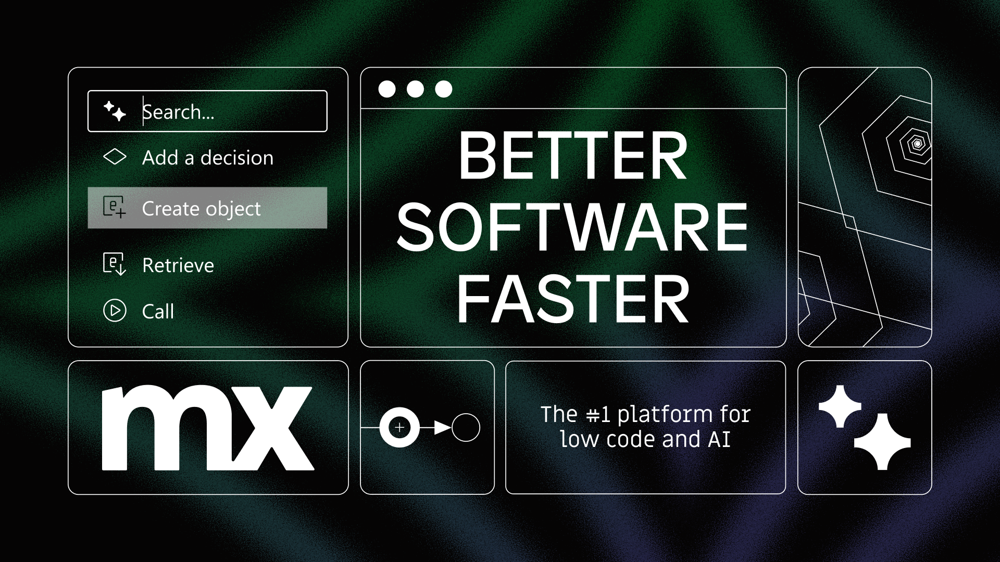
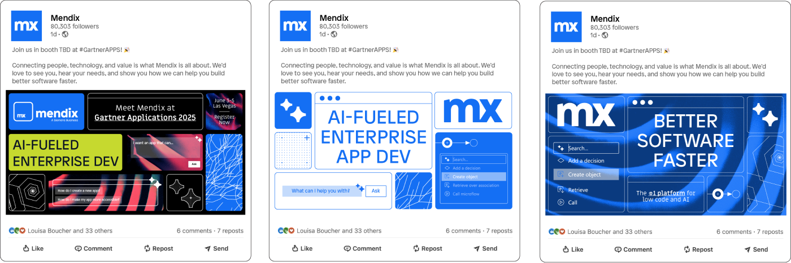